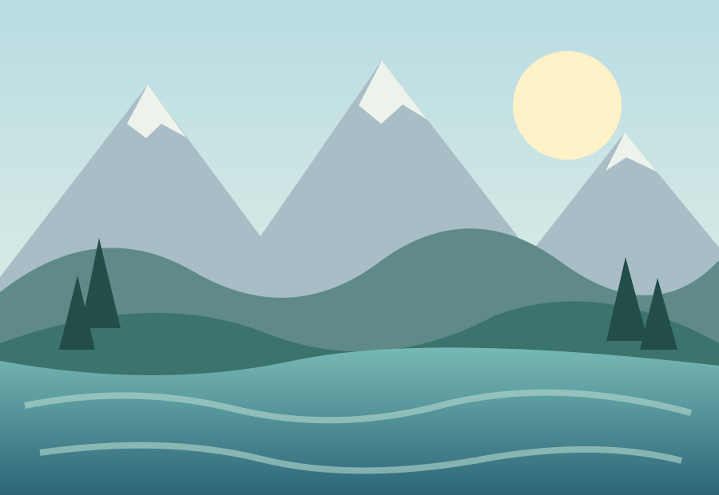
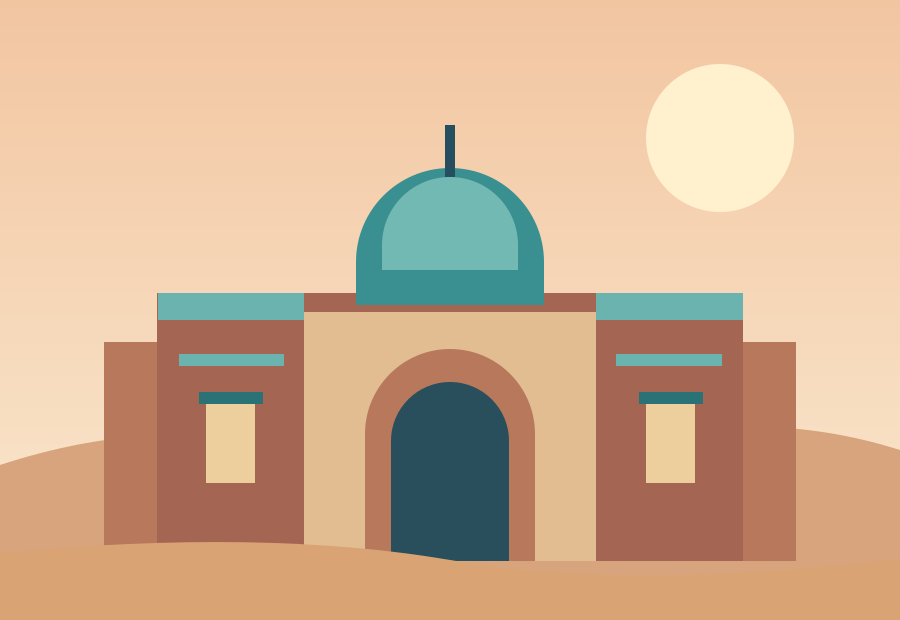
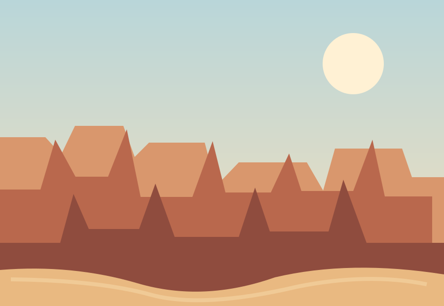
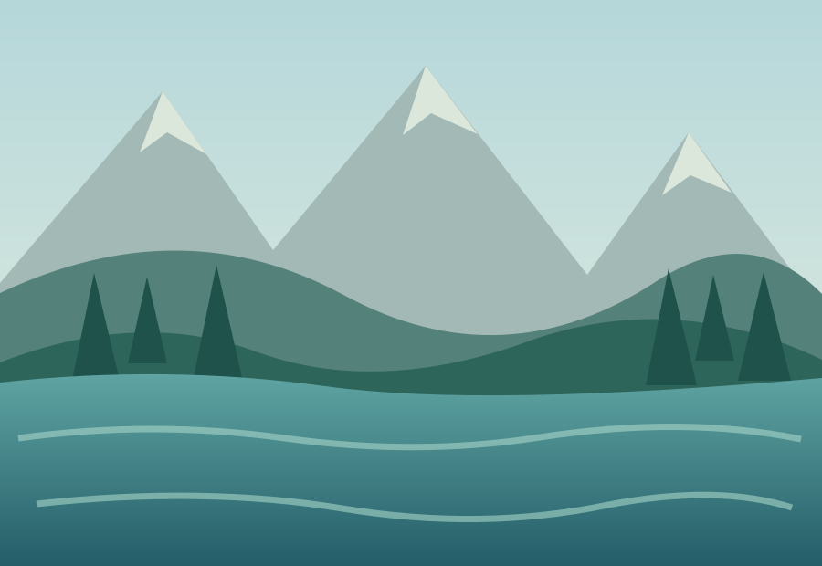

A visual journey
Places in pictures.
An illustrated look at the landscapes, landmarks, and wide-open spaces that shape the journey.




Keep exploring
An illustrated look at the landscapes, landmarks, and wide-open spaces that shape the journey.



